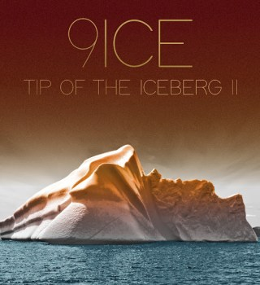
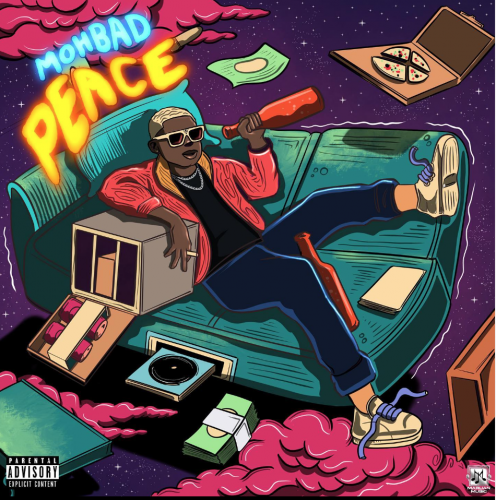
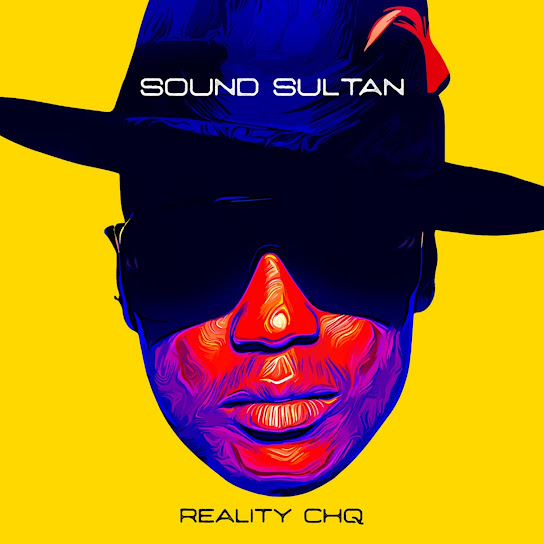
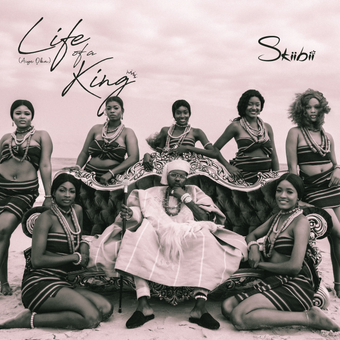
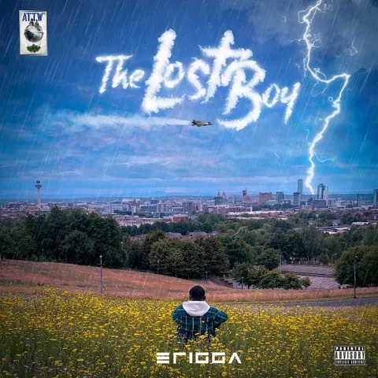
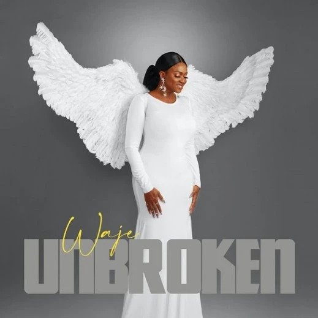
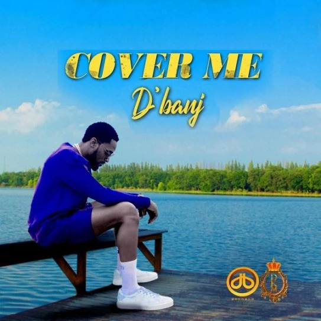
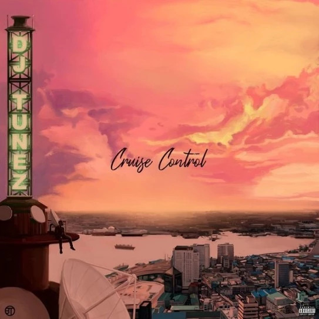
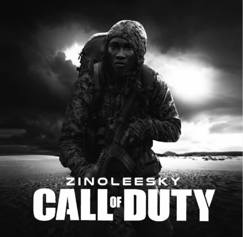

9ICE - TIP OF THE ICEBERG (ALBUM)
9ice, alapomeji is out with his new studio album, and based on the album's features
one could tell that 9ice was purposeful about the album. Tiwa Savage,
Reekado Banks, Zlatan, Bella Shmurda, Allan B, and his 'music daddy'
Wyclef Jean are among the artists who appear on its eight tracks.
SEP.16.22
VECTOR X WANDE COAL
- MAMA MARADONA
In anticipation of his much awaited album following his 2016 studio album
titled, ‘Lafiaji.’Vector team up with black daimond himself whose catchy voice
dominated the second verse.
SEP.16.22

MOHBAD - PEACE
Marlian Music recording artiste, Mohbad comes through with another clubby sensation tagged, ‘Peace’.
This new song serves as a follow up to Mohbad’s last single- Ronaldo,
an Ampiano tune produced by Niphkeys. This is Mohbad second official single for 2022.
SEP.16.22

SOUND SULTAN – REALITY CHQ (EP)
With respect to the late singer’s one-year posthumous exit, his brother
Baba Dee announced the release of his project ‘Reality CHQ’.
“We are having the one-year remembrance of Sound Sultan, iconic Nigerian singer and we
are having his official listening party for the album.
SEP.16.22

SKIBII - LIFE OF A KING(AIYE OBA) EP
Skiibii has released a new studio body of work tagged, ‘Life of
A King’ aka Aiye Oba.The project houses four tracks with no features.
SEP.16.22

ERIGGA - THE LOST BOY (ALBUM)
Nigerian rapper, Erigga has released his long-awaited album tittled,
‘The Lost Boy’.The album compiles of 13 tracks with guest appearances
by EBII, YUANG, Jay Teazer, Oga Network, Igosave, Jeriq, PsychoYP, Mephyz and Odumodublvck.
SEP.02.22

WAJE - UNBROKEN (ALBUM)
Waje has released her long-awaited studio album titled,
‘Unbroken‘.Speaking about the release of her project,
she wrote: “I give praise to a beautiful God who has
shown me mercy, who am I without you? I cannot imagine.you
are God alone who holds me UNBROKEN!”
SEP.16.22

D'BANJ - COVER ME
Veteran Nigerian hitmaker, D’banj takes on a solid mid-tempo
stand on his latest delivery, ‘Cover Me’.Listen
SEP.16.22

DJ TUNEZ - CRUISE CONTROL VOL.1 (EP)
Wizkid official dj, Dj Tunez drops Cruise control ep and featured some
of the industry’s finnest like Wizkid, and Wande Coal, coupled
with raving singers like Mohbad, Tay Iwar, Alpha P, Projexx and others.
SEP.01.22

ZINOLEESKY - CALL OF DUTY
Big tune from malian record singer Zinoleesky, This new tune is as a result of his favourite
video game- Call Off Duty, and was produced by Niphkeys.
Certainly, Call of Duty is everything you expect of Zino to deliver – from the
Amapiano sound to the vocal blend…
SEP.01.22